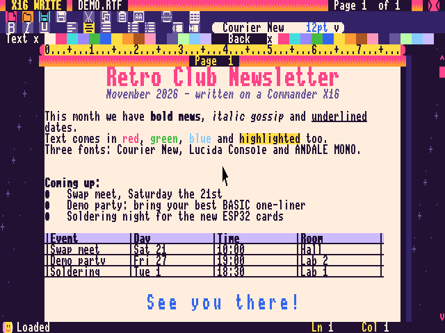
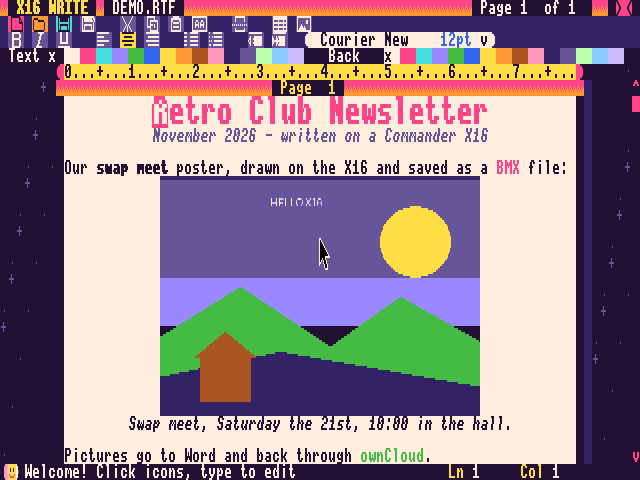
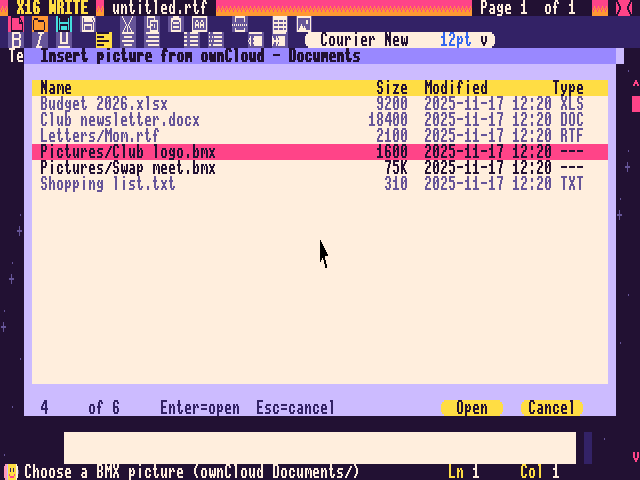
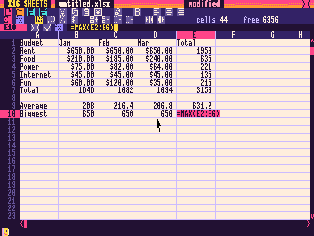
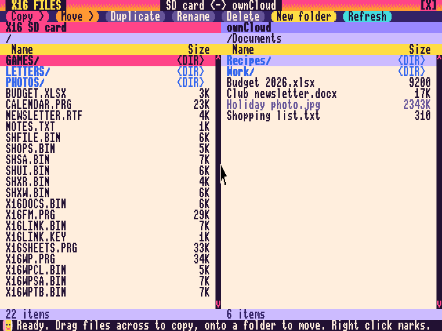
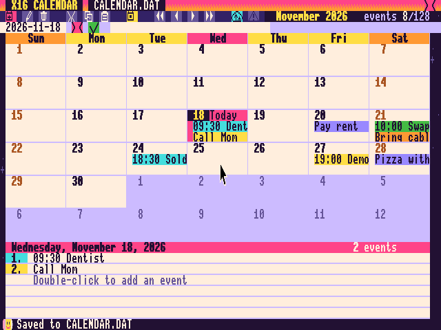

X16 Office
Suite
A word processor (now with BMX pictures), a spreadsheet, a file manager and a calendar for the Commander X16. Driven by the mouse, all in one cheerful look.

No server needed
Every app works on its own, from the SD card. Copy the files, LOAD, RUN, done.
No network card, no hub, no ownCloud account.
Your work is saved as ordinary RTF and XLSX files, so you can carry the SD card to a PC and open them in Word, Excel or LibreOffice.
ownCloud is the optional extra: add it and your X16 shares documents, spreadsheets and your calendar with your laptop, phone and anything else that talks to ownCloud. How that works
X16 Write
X16WP.PRGReal documents: formatting, lists, tables and pages.
- Bold, italic, underline, left / centre / right alignment
- Three fonts (Courier New, Lucida Console, Andale Mono) in 12, 18, 24 and 36 pt
- 16 text colours and 16 highlight colours
- Bullet and numbered lists with indent and outdent
- Tables up to 8 columns x 20 rows: Tab to the next cell, add and delete rows
- Pictures: BMX files from the SD card or ownCloud (see below)
- Up to 16 pages, or 64 pages on an X16 with 1.5 or 2 MB of RAM, with page breaks, page borders and a ruler
- Cut, copy, paste, select all; click, drag and double-click to select
- Save As with a folder browser: open folders, go up, make new ones
Word tables open as X16 Write tables, and X16 Write tables are saved as real Word tables. Full X16 Write guide
Pictures: BMX files
NEW
Put your X16 art in your documents.
- The Picture button inserts a BMX file, the Commander X16's own bitmap format, from the SD card or from ownCloud
- Shown in 256 colours; from ownCloud you can also pick PNG, JPEG, GIF and BMP files (phone photos too), which the sync hub turns into BMX
- 1, 2, 4 and 8 bits per pixel, up to 640 x 1024; scaled to fit the page and never split across two pages
- The file itself is kept exactly as it was (without X16WPHC.BIN pictures are shown in the 16 Sunset colours)
- Backspace or Delete on a picture removes it; text never runs into a picture
- Saved inside the document's RTF file, so the document stays one file
- Several pictures per document: two full-screen 256-colour pictures, or many small ones

Pictures travel to Word and back.
- Save a document to ownCloud as .docx or .rtf and Word shows real pictures, the same size as on the X16
- Open a Word document on the X16 and its PNG, JPEG, GIF and BMP pictures arrive as BMX pictures
- An X16 document saved to ownCloud and opened again comes back byte for byte
- The sync hub does the converting; the X16 only ever sees BMX
Without ownCloud, pictures still work from the SD card; other programs simply skip them in the RTF file.
X16 Sheets
X16SHEETS.PRG
Formulas that recalculate, formats that stick.
- Formulas with
+ - * / ^ %, comparisons and parentheses - Functions: SUM, AVERAGE, MIN, MAX, COUNT, PRODUCT, ABS, SQRT, INT, ROUND, IF
- Relative and absolute references (
$A$1), ranges, click or drag to insert them - AutoSum, and a live Sum and Count of the selection in the status bar
- Number formats: General, 0.00, Percent, Currency
- Insert and delete rows and columns; formulas follow
- Copy and paste adjust references; paste one cell over a range to fill it
- Columns A-IV, rows 1-9999, up to 12,288 cells with 2 MB of RAM
Sheets are real .xlsx files that Excel, LibreOffice and ownCloud open as they are.
Full X16 Sheets guide
X16 Files
X16FM.PRG
Two panes: your SD card and your cloud, side by side.
- Drag files across to copy them; drag onto a folder to move them
- Right click to mark several files, then copy, move or delete them all
- Copy, Move, Duplicate, Rename, Delete and New folder buttons, with F-key shortcuts
- Whole folders copy and delete with everything inside
- Sizes, and dates on ownCloud, in the status bar
- Without ownCloud the left pane is a full SD card file manager on its own
Files up to 1 MiB travel in either direction, and a dropped Wi-Fi connection picks up where it stopped. Full X16 Files guide
X16 Calendar
CALENDAR.PRG
Your month at a glance, on your phone too.
- Month grid with coloured event chips; today in yellow, the selected day in pink
- Just start typing to add an event; start with a time (
14:30 Dentist) for a timed one - Drag an event to another day to move it; cut, copy and paste events
- Jump by month or year, or straight back to Today
- Saved to
CALENDAR.DATafter every change - Sync with an ownCloud calendar: new, changed and deleted events go both ways
- Conflicts are never lost: the X16 version is kept and the differences are listed
Add an event on your phone, press Sync on the X16, and it is there. Full X16 Calendar guide
In every app
One look, six themes
Sunset Arcade, Crayon Desk, Comic Book, Beach Hut, Chalkboard or Winter Cabin: click Quill to switch, and every app follows your pick. Learn one app and you know them all.
Mouse first
Click, drag, double-click, right click and the wheel all do what you expect. Hover over a button and its tip appears in the status bar.
Keyboard too
Dialogs answer to Enter and Esc, and the common actions have keys. Arrows, Home, PgUp and PgDn work where they should.
Your colours, kept
The theme only changes how colours look on the X16's screen. Saved files keep the standard colours, so they look right everywhere else.
Folders
Save As in Write and Sheets browses folders on the SD card and on ownCloud, and can make new ones (F7).
Meet Quill
The little pencil at the left of the status bar blinks now and then, and hops when something went well: a save, a copy, a sync. Click it for the next theme.
Share with your other devices
optionalWithout ownCloud, the SD card is where your work lives. With it, your X16 joins your other computers: write a letter on the X16 and finish it in Word on your laptop, update a budget on the PC and open it on the X16, add a dentist appointment on your phone and see it in X16 Calendar.
Files, Calendar
on your network
and X16 calendar
tablet, web
What ownCloud adds
- Write opens and saves RTF, TXT and Word (.docx) in ownCloud's Documents folder, and inserts BMX pictures from it
- Pictures become real pictures in Word, and Word's pictures come to the X16 as BMX
- Sheets opens any XLSX or CSV, and saves XLSX or CSV
- Files copies and moves files and folders between the SD card and ownCloud
- Calendar syncs both ways with an ownCloud calendar your phone can use
- Nothing is overwritten silently: if a file changed elsewhere you choose Overwrite, New name or Cancel
- The hub sets the X16's clock at every sync
What you need for it
- The TexElec X16 Serial & ESP32 Network Card (Zimodem firmware) on your Wi-Fi
- An ownCloud server you can reach over HTTPS
- A Linux machine (a Raspberry Pi is fine) running the sync hub container, about 20 minutes with Docker
- The
X16LINK.KEYthe hub makes for your X16, copied to the SD card
Step by step: the sync hub guide. Each X16 has its own key, and the X16 and the hub prove they know it before anything else happens.
Get it running
On the X16
- Download the latest release (or the sdcard folder).
- Copy everything to the root of the X16's SD card.
LOAD "X16WP.PRG"andRUN, orX16SHEETS.PRG,X16FM.PRG,CALENDAR.PRG.
You need a mouse and 512 KB of RAM.
In the emulator
The official x16emu runs every app:
x16emu -scale 2 -fsroot sdcard -prg sdcard/X16WP.PRG -run
Add -rtc so the calendar knows today's date. The screenshots on this page were taken in the emulator.
| Files on the SD card | Needed by |
|---|---|
| X16WP.PRG, X16WPCL.BIN, X16WPSA.BIN, X16WPTB.BIN, X16WPPI.BIN, X16WPPL.BIN, X16WPHC.BIN, X16WPTH.BIN | X16 Write (ownCloud, Save As folder browser, tables, pictures in 256 colours, tool tips and themes) |
| X16SHEETS.PRG, SHUI.BIN, SHOPS.BIN, SHFILE.BIN, SHXW.BIN, SHXR.BIN, SHSA.BIN, SHTH.BIN | X16 Sheets (all required except SHTH.BIN, for themes) |
| X16THEME1.BIN ... X16THEME6.BIN | The six themes, shared by all four apps (optional; click Quill to switch) |
| X16FM.PRG | X16 Files |
| CALENDAR.PRG | X16 Calendar |
| X16LINK.BIN, X16DOCS.BIN | The ownCloud link, shared by all four apps (only if you use ownCloud) |
| X16LINK.KEY | Yours, made by the hub for this X16 (only if you use ownCloud). Keep it safe like a house key. |
Source code: X16 Write, X16 Sheets, X16 Files, X16 Calendar and the sync hub. Built with Prog8 and 64tass.